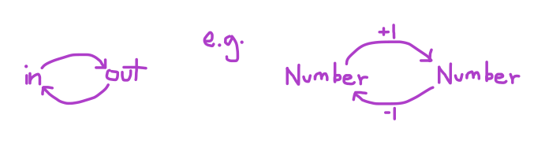
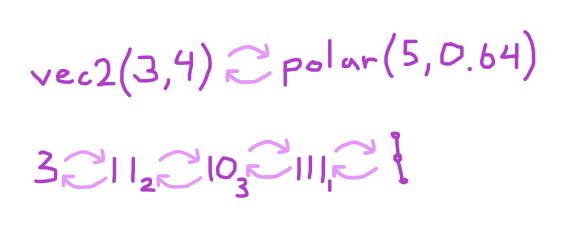
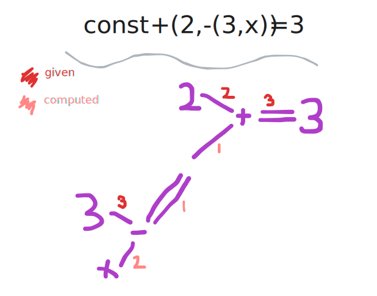

This is an interactive note about a little language that is about calling functions on both the right side (like usual) and the left side of `=`. Scroll down to the interactive code editor below if you just want to try it out. The language is inspired by destructuring, or pattern matching.
Pattern Matching in Agda / Haskell:head (x :: xs) = x tail (x :: xs) = xsDestructuring in JavaScript:
const head = ([x,..._]) => x const tail = ([_,...rest]) => rest
I think I first started thinking about this little language when I was learning Agda during HoTTest Summer School. In Agda, I learned how to define isomorphisms.
An isomorphism is a function with an opposite: you can give it an input and get an output, but then you can also give it an output and get back the same input.
In functional languages, data constructors are functions that have opposites! You give a constructor an input, and you get out a data structure as output. With a data structure, you can get back all the inputs used to construct it. Here's an example of some code to get back all the inputs used to construct an object in JavaScript (of course you can also destrcucture objects in JS, but I'm trying to illustrate that you can write code to do this without fancy destructuring syntax)
const exampleObject = { propertyName1: 'hello', propertyName2: 'goodbye'};
const inputs = Object.entries(exampleObject)
// [['propertyName1', 'hello'], ['propertyName2', 'goodbye']]
This is pretty much the reason that pattern matching and destructuring works! The only way to make data structures is with constructors, and constructors have opposites, so you can destructure or pattern match data using constructors!
// constructor const a = [1,2,3] // constructor opposite const [x,y,z] = a
Pattern matching using constructors is great!.. But in all but the most primitive cases, things can be decomposed in multiple ways. Here's two illustrations of what I mean:
In the first row in the illustration above, we have two ways of decomposing any 2D vector: first into cartesian coordinates, and second into polar coordinates. Usually when programming, we construct our 2D vector data one of these two ways, so we can only pattern match on the way we constructed the data.
In the second row, we have multiple ways of writing any number. Numbers can't be destructured in JavaScript, but they can be pattern matched in Agda, like in this definition of `+`:
data Number : Set where 0 : Number successor : Number → Number _ + _ : Number -> Number -> Number 0 + y = y successor(x) + y = successor(x + y)
But there's lots of other ways of writing numbers, so why can't we pattern match them in other ways? For some other examples, we can write any number as a sum of two other numbers, or as a product or exponential. Once again, why can't we pattern match against these other ways of writing numbers?
Okay, so I've tried to write down my thoughts around this mini-language up to this point. Now, let me just talk about what it is. The language has a few built-in functions:
Each of these functions can be used on the left or the right side of the `=`. The grammar is very roughly:
program ::= [line][program] | [endOfInput] line ::= const [funcCall] | [positiveInteger] | [varName] = [funcCall] | [positiveInteger] | [varName]
In each line, only one variable that does not have a value is allowed to occur, unless you are destructuring an array. Each entry of an array may have one variable without a value. Although it may look like one, this language is not a relational language (like e.g. miniKanren). It can't find solutions from constraints. It is actually just a convenient syntax for calling functions forward and backward.
Anyway, please try it out! Let me know your thoughts in the comments below or on mastodon or X (formerly twitter).
+, *, **, array all currently have definitions per "missing" argument or output (e.g. one definition for each of +(a,2)=2, +(2,a)=2, +(2,2)=a). In contrast to relational languages where there is one definition that works in all these cases.
To figure out the value of a variable, the syntax tree is traversed, starting at that variable's node, and the values are filled in using the definitions mentioned above. You can see the (very rough) code here. Here's an illustration of a traversal:
Right now, programs are evaluated forwards and backwards. If you write your program carefully, the entire thing will be an isomorphism. This means that we can let the user define their own bidirectional functions just by writing some lines of code in the body like normal coding. Not all functions written this way would be bidirectional, but its easy to check if they are just by looking at which variables depend on which variables in the body of a function.
We can add a definition to functions for when too many arguments / results are missing for there to be a single answer. For example
const +(a,b) = 3
could give an iterable which gives all pairs of `a`s and `b`s that add to 3. It could also give a dependency graph: a = 3-b, b = 3-a so that a and b can be filled in later.
Definitions could also be added for when multiple arguments are actually the same variable.
Although this seems tedious, it results in programs that run much faster than relational programs, but can be written in a similar way. Don't get me wrong, relational languages are way more expressive, but I think this could be nice syntax to have for non-relational languages.